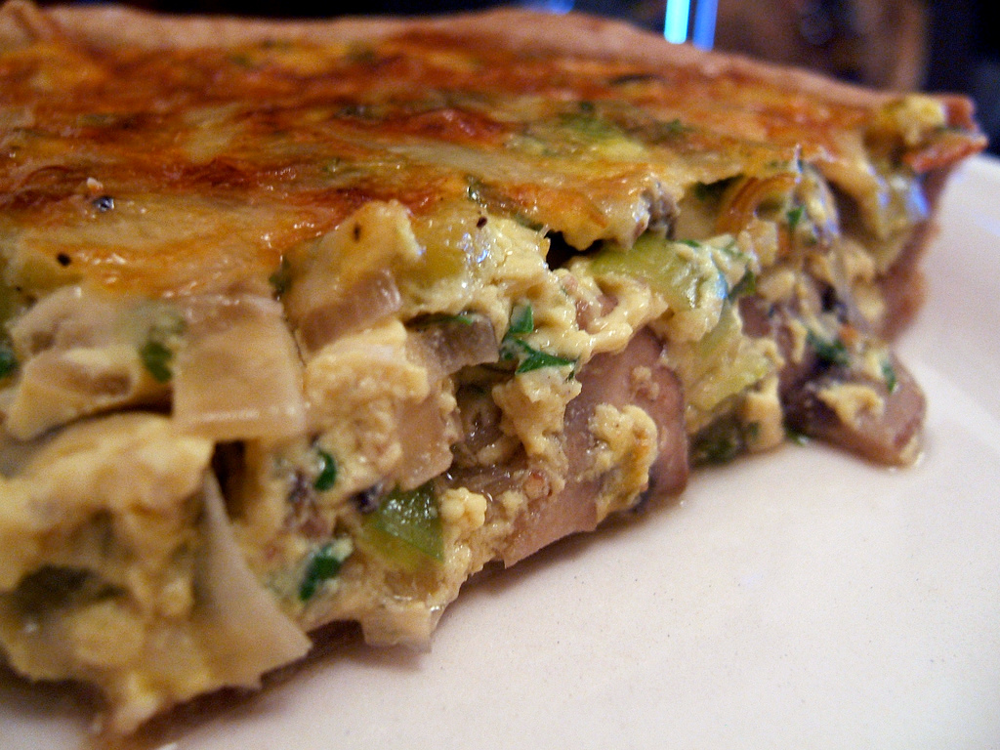

Quiche

Description
Quiche is a French tart consisting of pastry crust filled with savoury custard and pieces of cheese, meat, seafood or vegetables. The best-known variant is quiche Lorraine, which includes lardons or bacon. Quiche can be served hot or cold. It is popular worldwide.
Ingredients
- 2 (9 inch) deep dish frozen pie crusts
- 1 tablespoon finely chopped green bell pepper
- 1 small onion, finely chopped
- 1 (4.5 ounce) can mushrooms, drained and chopped
- 6 eggs
- 5 2 cups heavy cream
- 8 ounces shredded Monterey Jack cheese
- 8 ounces shredded Swiss cheese
- 12 ounces cooked ham, chopped
- ½ teaspoon vinegar
- ⅛ teaspoon dried tarragon
- 1 pinch garlic powder
- 1 pinch ground nutmeg
- 1 pinch dried parsley
- salt and pepper to taste
Steps
- Preheat oven to 350 degrees F (175 degrees C) and pre-bake crusts for 10 minutes. Set aside to cool on racks.
- In a large skillet, saute green pepper, onion and mushrooms until onions are soft and translucent. Remove from heat and set aside.
- In a large bowl, mix eggs and cream together. Stir in the shredded Jack and Swiss cheese, chopped ham and sauteed vegetables. Stir in vinegar and season with tarragon, garlic powder, nutmeg, parsley, salt and pepper. Divide filling into the 2 baked pie crusts.
- Bake in the preheated oven for 55 to 60 minutes, or until filling is set and crusts are golden brown.
Return to Main Page